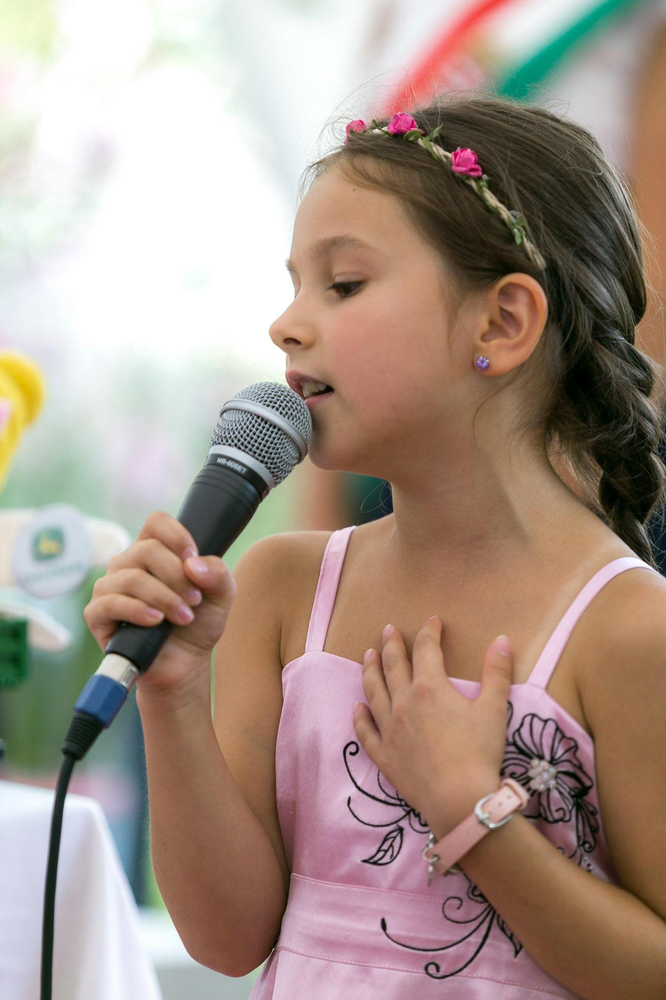
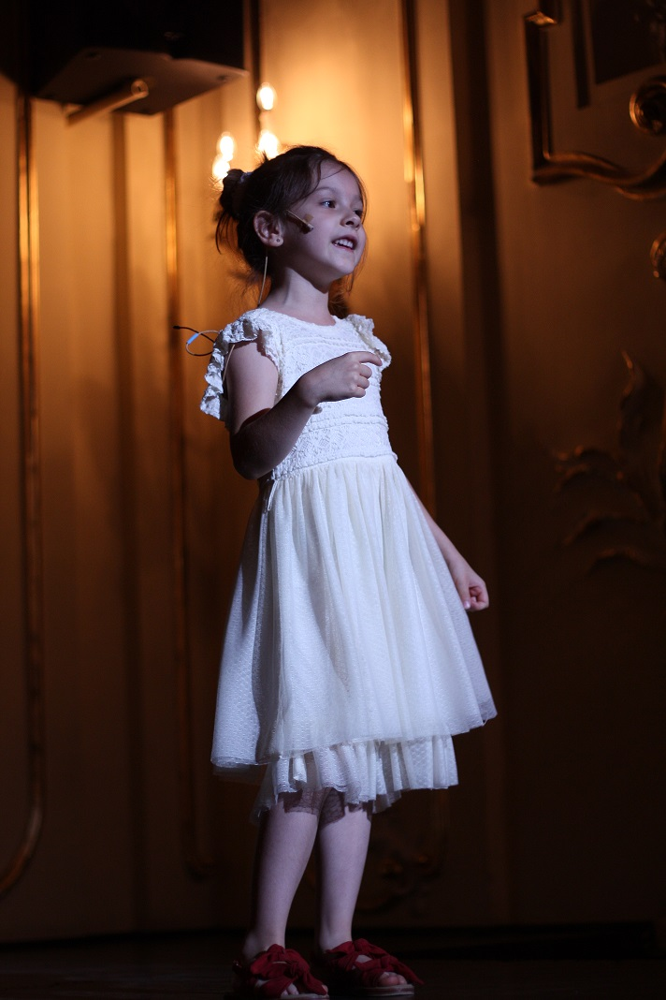
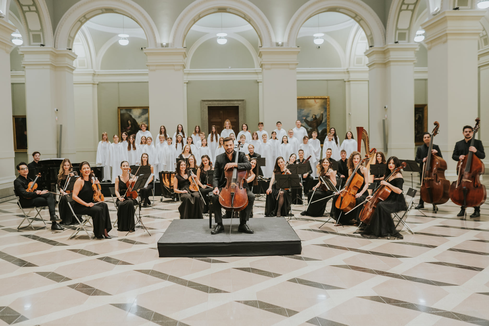

Olivia's musical talent was noticed by her parents at the age of 5. In 2016, she was invited to take part in the children's got talent show 'Little Giants' on RTL channel, where children could showcase their talents from different angles. Olivia's outstanding vocal performances made her the individual winner of her category. Subsequently, in 2017-2018, as an invited performer for the 'Kővirágok' singing school, she performed Disney fairy tales songs (Pocahontas: Colours of the Wind; The Princess and the Frog: Almost There) at several of the school's flagship anniversary events.

In 2019, she was invited to the national singing competition 'Soundwave', where she was the youngest competitor in the field and reached the finals. Also this year, Olivia was invited to perform at several events in her hometown (local festivals, building dedications, children's day events, advent celebrations and the Red Cross annual closing congress), as well as private events and weddings.

In 2020 and 2021, she also sang in a charity show (Tones and I:Dance Monkey; Caramel: I'm Flying with the Song) initiated by the TV2 commercial channel to help the troubled people of Covid-19.

In 2021, she sang the song ’Memory’ as a guest artist in the 1500th anniversary performance of the world famous musical ’Cats’ at the Madách Theatre in Budapest. Olivia is a member of the SoulAir chamber choir, made famous by the Academy Award winning live action short film "Mindenki”, with whom she has participated in several exciting performances, filming, event openings (e.g. UEFA 2020 Budapest opening ceremony) and most recently in the video clip for Elton John's 75th birthday by renowned cellist Hauser (link: HAUSER - My Gift is My Song (Ode to Sir Elton John) - YouTube.)